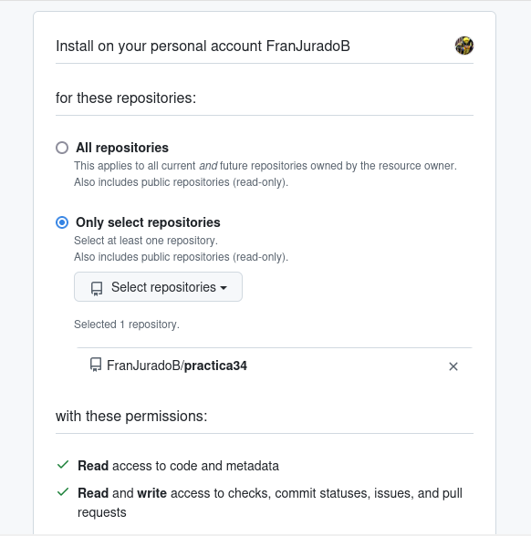

Practica 3-2. Instalacion de Node.js Express y test de la primera aplicación.
Para empezar con esta práctica, debemos de parar nuestro servicio de Tomcat ya que nos podría ocasionar problemas. Para ello:
sudo systemctl stop tomcat10
Una vez realizado, procedemos a instalar mediante el siguiente comando.
sudo apt -y install nodejs npm

Cuando lo tengamos instalado, deberemos de instalar tambien Express. Para ello haremos uso del siguiente comando:
sudo npm install -g express

Ahora, una vez que hayamos terminado de instalar todo lo necesario, procedemos con el despliegue de nuestra apliación. Despliegue de aplicación de manera local.
Empezaremos clonando nuestro repositorio, del cual haremos el despliegue. git clone https://github.com/MehedilslamRipon/Shopping-Cart-Application
Y accederemos a la carpeta.
cd Shopping-Cart-Application
Una vez dentro, debemos instalar las librerías necesarias para que nuestra aplicación funcione correctamente.
npm install


Y haremos uso del siguiente comando para que no nos dé el error sh: 1: nodemon: not found.
npm install nodemon --save--dev
Y desplegamos nuestra aplicación.

Y hacemos la comprobación de que accede correctamente.

Práctica 3.4: Despliegue de una aplicación una aplicación React en Netlify (PaaS)
Creación de nuestra aplicación
Lo primero es crear los siguientes archivos en un mismo directorio para crear la aplicación:


Ahora se crea el package.json con npm init.

Y se comprueba qque funciona ejecutando node aplicacion.js y comprobándolo con la ip de la máquina y el puerto que por defecto es el 8080.

Aplicación para Netlify
Se clona el repositorio con el siguiente comando: git clone https://github.com/StackAbuse/color-shades-generator

Lo primero es registrarse en NETLIFY con el correo y sin usar el Github.
Luego se crea un token de acceso y se copia dicho token.

Despliegue mediante CLI
Se instala el CLI de NETLIFY.

Se guarda el token de antes para acceder, mediante una variable.
Se hace el login con el comando siguiente:
Dentro del proyecto se instala las librerías.

Se ejecuta el proyecto.
Se hace un pre despliegue ahora con netlify deploy.

Y finalmente se despliega con netlify deploy --prod.
Se comprueba el despliegue.


Despliegue mediante conexión con Github
Lo primero es eliminar la página creada en netlify y el repositorio que se habia clonado.

Se descarga las fuentes en formato .zip.

Se crea un nuevo repositorio.

Se añade el contenido de la carpeta al repositorio.

Ahora se procede a conectar el repositorio con NETLIFY, se autoriza todo y luego se selecciona el repositorio creado antes.

Seleccionamos el repositorio que nos interesa y se comprueba que el nombre está disponible.

Se introducen los siguientes comandos en los campos de datos y se le da a deploy.


Ahora se accede a la carpeta public y se modifica el archivo robot.txt, se pone el nombre en disallow, se sube al repositorio con un commit y ya estaría hecho.